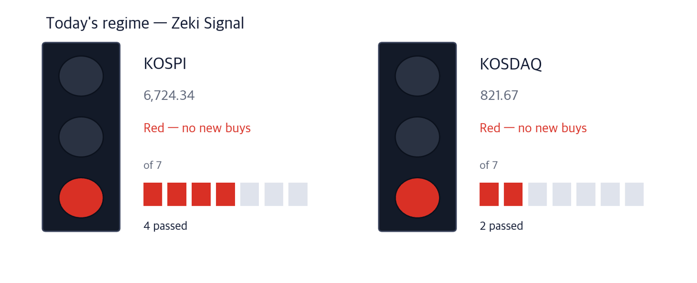
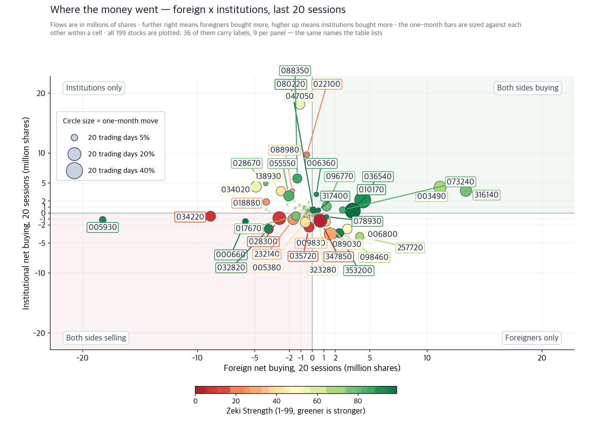
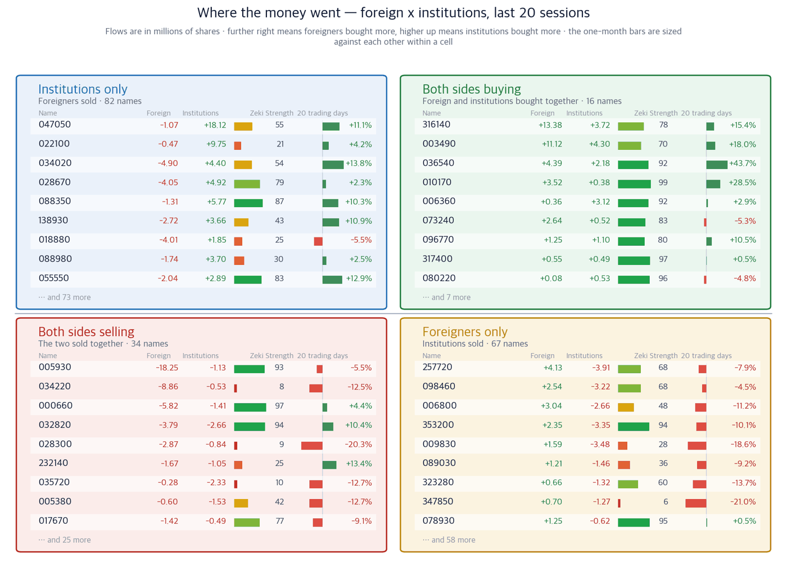

The day after the hike, Seoul's gainers were banks and optical cable
18 September 2026 · figures are as of the 17 September close
Companies we do not own, found in the newspapers — with the figures behind why they might earn their place.
KOSPI 6,724.34 (+0.09%) | KOSDAQ 821.67 (+0.70%) | Nasdaq 26,418 (+1.69%) | UST 10-year 4.95% | Zeki Signal Red |

How to read this
| Lit lamp | Today's regime. Green means buyers have the edge, yellow means wait, red means no new buys. |
| Filled squares | How many of the 7 conditions passed. More filled means firmer market structure. |
| All filled but not green | Something else pulled the grade down one step. The reason is printed under the lamp. |
The Zeki Signal condenses seven readings on the market into one light. Both KOSPI and KOSDAQ are red. KOSPI passes 4 of the 7 tests, KOSDAQ 2.
What to do now
The three conclusions first
Executive summary — the three conclusions
- The U.S. central bank raised its policy rate by 0.25 point on 16 September. New York recovered the next day and the Nasdaq rose 1.69%. Seoul held the 6,700 line.
- When rates rise, the gap between a bank's deposit and lending rates widens. Banks rose more than any other sector last week. Woori Financial Group drew the largest foreign net buying of the 280 names we measure.
- AI data centres consume optical modules. Doosan will put 420 billion won into a line for optical-module material. The company where that demand already shows in the price is Taihan Fiberoptics.
So what do we do: In the first 30 minutes, watch which of the two draws the volume — banks or optical cable.
First, this week's economy
If you remember one number this week, make it 2.80% — how much the bank sector rose over the past week. Insurers rose 0.26% in the same days. The market is pricing the turn toward higher rates first. (Korea Exchange)
| Date | What to watch | What it changes |
|---|
| 18 Sep, first 30 min | Whether KOSPI holds 6,717.97 | A close below it ends a two-day advance |
| 18 Sep close | Whether foreign net buying in banks continues | If it does, the rate-rise case holds |
The U.S. central bank decides at its October meeting whether to raise again. We could not confirm the meeting date, so it is not in the calendar. The mandatory tender offer bill still faces two votes, and those dates are not yet set.
Why the figures agree
Checked one by one against price and flows
Theme 1 · What data centres add is optical modules
Doosan said on 17 September it will spend 970 billion won on substrate material capacity. Of that, 420 billion goes to a domestic line for optical-module material. Optical modules link server to server by light inside a data centre. Doosan supplies this material to Nvidia. Its domestic lines already run flat out. (Hankyung)
What we looked at is not Doosan but the step before it. More optical modules means more optical fibre and cable. We looked for the company where that demand already shows in price and in flows.
Taihan Fiberoptics (010170) Well grounded · our own pick
Close KRW 16,250 · 17 Sep +0.12% · 20 sessions +28.46% · 3 months +13.88% · Zeki Strength 99 · Zeki Money B
Who A Korean optical fibre and cable maker · What demand for data-centre cable · When through the 17 September close · Where at data-centre builds at home and abroad · Why because parts that link servers by light are multiplying · How it turns into fibre and cable sales
Foreign investors bought 3.52 million shares net over 20 sessions and institutions added 380,000. That is fifth for foreign net buying among the 280 names we measure. Flow data runs to 16 September.
Confirming signal — The 17 September close of KRW 16,250 sits above the 50-day average of 12,185. Holding it keeps the cable-demand case intact.
What would invalidate it — A close below the 1 September level of KRW 13,310 erases the 20-session advance. Zeki Strength under 90 also drops it.
Doosan (000150) Needs checking · named in the paper
Close KRW 1,413,000 · 17 Sep +2.10% · 20 sessions +19.95% · 3 months -7.71% · Zeki Strength 86 · Zeki Money C
Who Doosan, the holding company · What an expansion in AI substrate material · When on 17 September · Where in Iksan and Gimje, and in Jiangsu, China · Why because AI capital spending has left the material short · How it reaches revenue from the second half of 2028
Our four tests are measured at the 17 September close. Over three months the price fell 7.71%, and foreign investors sold 160,000 shares over 20 sessions. So it meets 2 of the 4, and its trend gauge is still below zero. That gap between the news and the price is why it is here today.
Confirming signal — The 17 September close of KRW 1,413,000 is above the 50-day average of 1,211,920. Watch whether it holds there after the announcement.
What would invalidate it — A close below the 1 September level of KRW 1,206,000 erases the 20-session advance. Reports that the material shortage has eased would also remove the premise.
Theme 2 · Higher rates widen a bank's margin
Korea, Europe and Japan have all turned toward raising rates. For a bank, lending rates move up faster than deposit rates, so interest income grows. Insurers earn more on the bonds they hold. In Korea, mortgage rates have jumped, raising the burden on people who borrowed in 2021. (Hankyung)
Woori Financial Group (316140) Grounded · our own pick
Close KRW 36,400 · 17 Sep +0.28% · 20 sessions +15.37% · 3 months +23.60% · Zeki Strength 78 · Zeki Money A
Who A financial holding company with a bank · What the deposit-to-lending spread · When through the 17 September close · Where in domestic household and corporate lending · Why because lending rates rise faster than deposit rates · How interest income grows
Foreign investors bought 13.37 million shares net over 20 sessions — the most of the 280 names we measure. Institutions added 3.72 million. Flow data runs to 16 September. Zeki Strength is 78, short of 90, so it meets 3 of the 4.
Confirming signal — The 17 September close of KRW 36,400 is above the 50-day average of 33,024. Holding it keeps the rate case intact.
What would invalidate it — A close below the 10 September level of KRW 34,000 erases the recent advance. A turn back toward rate cuts removes the premise.
Two themes we left out today
Hanwha Systems rose 15.53% on 17 September, as news of a United Arab Emirates air-defence project and a defence-sector audit landed together. But Zeki Strength is 63, institutions sold 240,000 shares over 20 sessions, and the trend gauge is below zero. It meets 2 of the 4. One day's rise is not a basis, so we did not make it a name.
Excluded Hanwha Systems is left out of today's candidates.
The National Assembly's finance committee passed a capital-markets bill on 17 September carrying a mandatory tender offer rule. When control of a listed company changes hands, ordinary shareholders get the chance to sell at the same price as the largest holder, up to 50% plus one share. The cost of buying a company valued at one trillion won rises from 300 billion to 500 billion. A rule abolished in 1998 returns after 28 years. (Hankyung)
This is the largest change in Seoul today. But our data cannot tell which listed company becomes a target. So we report it as a change in the rules rather than turning it into a name.
Today's findings, on one page
| Theme | Name | Zeki Strength | Weight of evidence |
|---|
| Optical modules and cable | Taihan Fiberoptics (010170) | 99 | Well grounded |
| AI substrate material | Doosan (000150) | 86 | Needs checking |
| Rate rises and bank margins | Woori Financial Group (316140) | 78 | Grounded |
| Defence (left out) | Hanwha Systems (272210) | 63 | Needs checking |
Weight of evidence — we counted four things
①up over 20 sessions ②Zeki Strength above 90 ③foreign net buying over 20 sessions ④institutional net buying over 20 sessions. The count sets the label. Prices are at the 17 September close, flows to 16 September.
| Name | ①up over
20 sessions | ②Strength
90+ | ③foreign
net buy | ④institutional
net buy | Met | Weight of evidence |
|---|
| Taihan Fiberoptics (010170) | O | O | O | O | 4/4 | Well grounded |
| Doosan (000150) | O | X | X | O | 2/4 | Needs checking |
| Woori Financial Group (316140) | O | X | O | O | 3/4 | Grounded |
| Hanwha Systems (272210) | O | X | O | X | 2/4 | Needs checking |
Where institutions and foreign investors went
The two charts and the tables below are independent of the articles. They count the exchange's disclosed net buying to show where money actually went. These are not our own calculations, so they carry no Zeki name. Data runs to 16 September; thinly traded names are excluded.

How to read this
| One dot | One stock. Its position is simply its two values, and the horizontal and vertical rules through the middle are the centre line for each. The four corner labels say what each quadrant means. |
| Dot size | The last month's move, up or down. Bigger means it moved more. |
| Dot colour | Zeki Strength — greener is stronger. |
| Only 30 | Korean and ticker labels overlap beyond that. The names left out sit near the centre, where little moved. |

How to read this
| What this does not say | Flows and price move over the same period, side by side. What comes next: when foreigners and institutions buy, prices do rise for a day or two, then give it back — and the move is smaller than tax and commission. Trading on this picture loses money. Buy the day after you see both of them buying, and the odds of being up 20 sessions later are 48% — the same as picking at random (49%). We measured it on 503 stocks over 17 years. |
| Four panels | The two measures are each compared with a centre line. Top right cleared both, bottom left cleared neither, and the other two cleared one. Each panel's title is a plain sentence saying what that means. |
| The two middle columns | Where the two periods are compared. If they carry letters A-E, that is the standard scale this industry uses: A heavy buying, B buying, C an even split, D selling, E heavy selling (a rank of all names in fifths, so A is the top 20%). If they carry numbers, that is net buying over the period. |
| Nine per panel | The largest movers in that panel. The rest are counted at the foot of the panel. These same nine per panel are the names labelled on the scatter. |
| Month bar | Zero at the centre: right is up, left is down. Compare lengths within one panel only — each panel is scaled to itself. |
| Zeki Strength | A 1-99 rank. Longer and greener means the stock's price is stronger than the market. |
Scanned all 280 stocks in our flow data, excluding those trading under 3bn won a day.
One limit first. Korea discloses foreign and institutional net buying daily, but our mirror lags: the last recorded day differs by stock and none reach today. Each row carries its own as-of date.
Foreign investors bought most
| Stock | Net shares, 20 days | RS | 20 trading days | As of |
|---|
| 316140 | +13,378,434 | 78 | +15.4% | 09-16 |
| 003490 | +11,121,964 | 70 | +18.0% | 09-16 |
| 036540 | +4,391,254 | 92 | +43.7% | 09-16 |
| 257720 | +4,126,308 | 68 | -7.9% | 09-16 |
| 010170 | +3,523,257 | 99 | +28.5% | 09-16 |
Foreign investors sold most
| Stock | Net shares, 20 days | RS | 20 trading days | As of |
|---|
| 005930 | -18,246,330 | 93 | -5.5% | 09-16 |
| 034220 | -8,859,560 | 8 | -12.5% | 09-16 |
| 000660 | -5,820,301 | 97 | +4.4% | 09-16 |
| 034020 | -4,899,928 | 54 | +13.8% | 09-16 |
| 028670 | -4,051,850 | 79 | +2.3% | 09-16 |
Institutions bought most
| Stock | Net shares, 20 days | RS | 20 trading days | As of |
|---|
| 047050 | +18,117,357 | 55 | +11.1% | 09-16 |
| 022100 | +9,747,457 | 21 | +4.2% | 09-16 |
| 088350 | +5,765,915 | 87 | +10.3% | 09-16 |
| 028670 | +4,922,665 | 79 | +2.3% | 09-16 |
| 034020 | +4,398,574 | 54 | +13.8% | 09-16 |
Institutions sold most
| Stock | Net shares, 20 days | RS | 20 trading days | As of |
|---|
| 257720 | -3,906,841 | 68 | -7.9% | 09-16 |
| 009830 | -3,482,183 | 28 | -18.6% | 09-16 |
| 353200 | -3,353,064 | 94 | -10.1% | 09-16 |
| 098460 | -3,217,047 | 68 | -4.5% | 09-16 |
| 006800 | -2,663,735 | 48 | -11.2% | 09-16 |
Did the money follow the names we found
Even when the article and the price agree, we look at the flows separately. Here are the names above, with their net buying restated.
| Name | Foreign, 20 sessions | Institutions, 20 sessions | Who bought | As of |
|---|
| Taihan Fiberoptics (010170) | +3.52 million shares | +380,000 shares | Both bought | 2026-09-16 |
| Doosan (000150) | −160,000 shares | +120,000 shares | Institutions only | 2026-09-16 |
| Woori Financial Group (316140) | +13.37 million shares | +3.72 million shares | Both bought | 2026-09-16 |
How the names we ran have done
5 of the 36 names run since 09/10 have 5 trading days behind them. Base: close on the day run; benchmark: KOSPI over the same days.
What it is. A record of the companies we found in the newspapers and named in this digest, marked at that day's close, then counted as the price moves. Grouped by how firm the evidence was.
What it is for. To keep a number on whether names picked from the news actually perform. Each name is recorded on the day it ran, so the winners cannot be chosen afterwards.
What it is not. Not a recommendation, not something we bought, and not yet a verdict. That comes once, from a pre-registered test, when both markets together reach 60 cases.
| Weight of evidence | Names | Up | Down | Beat
KOSPI | Avg excess |
|---|
| Well grounded | 1 | 0 | 1 | 1/1 | +2.1% |
| Grounded | 2 | 2 | 0 | 2/2 | +8.8% |
| Needs checking | 1 | 0 | 1 | 0/1 | -4.1% |
| Excluded | 1 | 0 | 0 | 1/1 | +4.4% |
| All | 5 | 2 | 2 | 4/5 | +4.0% |
76 cases collected so far. Until the test fires we only count ups and downs. 31 names without 5 trading days yet are excluded. Paper tally; no trading costs deducted.
Intraday checklist
| When | What to watch |
|---|
| First 30 minutes | Whether KOSPI holds above 6,717.97 |
| First 30 minutes | Which draws the volume — banks or optical cable |
| Last 30 minutes | Whether Taihan Fiberoptics closes above the 50-day average of KRW 12,185 |
How to read today's names
Zeki Strength ranks a stock's price action from 1 to 99 against everything we follow; 99 is strongest.
Zeki Money grades from A to E whether volume gathered on up days, with A the top 20%. It does not predict the next month. It shows where a name stands now.
The confirming and withdrawing signals are conditions we write down in advance, with the price and the date, so they cannot be chosen after the fact.
Sources read today — the 18 September edition of the Korea Economic Daily (한국경제) and its articles, net buying disclosed by the Korea Exchange, and our own price and flow data (prices to the 17 September close, flows to 16 September). No sentences were copied; the facts were rewritten in our own words.
Our price data omits companies that were delisted, which biases past performance upward (survivorship bias).
This digest carries names filtered by figures we calculate ourselves. It is not individual investment advice and does not recommend buying or selling any security. Every grade and rank shown is our own calculation, on a simulated portfolio basis. Investing carries risk of loss of capital.
This is the Rex Way, ZekiRex™